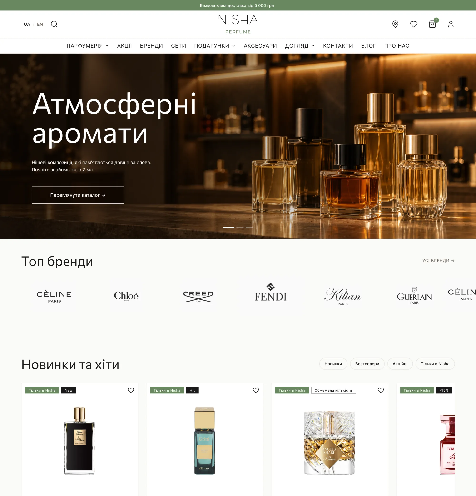
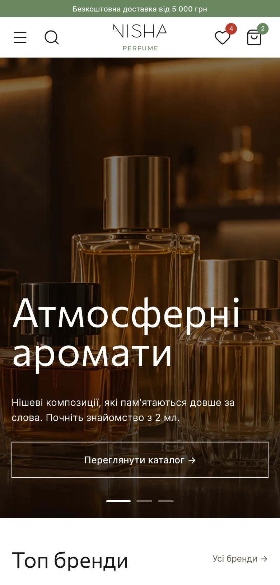

Одне чітке повідомлення на головній
ПроблемаНа головній не було фокусу: банери в різних стилях і Instagram-блок на головному місці.
РішенняОдне повідомлення в hero: спробуй будь-який аромат з малого об’єму; топ-бренди і «Новинки та хіти» одразу після нього; темні теплі банери з одним зеленим акцентом.

